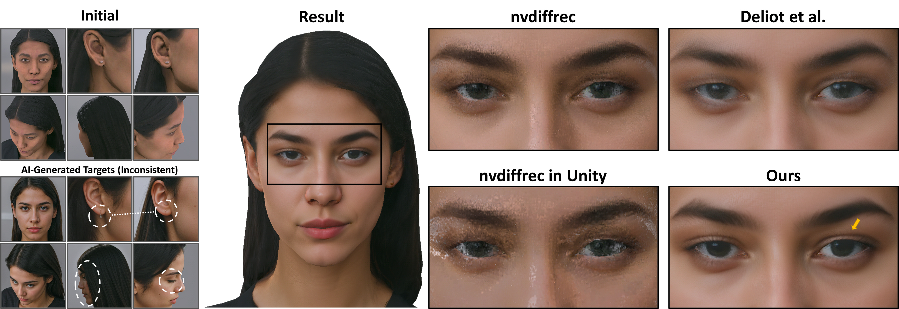
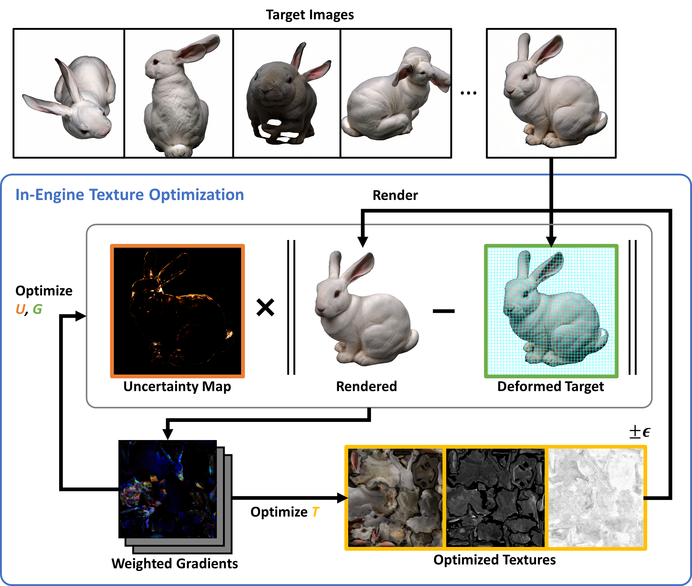

We propose a robust texture optimization framework that handles inconsistent AI-generated targets by operating directly within non-differentiable production pipelines. Standard optimization approaches struggle with inconsistent targets, often producing blurry textures and ghosting artifacts. Moreover, existing inverse rendering methods rely on differentiable renderers, causing a rendering gap when assets are deployed in production engines. To address the inconsistencies, we introduce a robust formulation that jointly optimizes a deformation grid and an uncertainty map. This formulation effectively decouples geometric misalignment from semantic hallucinations. To avoid the rendering gap, we leverage finite-difference gradient estimation to operate entirely within standard rasterizers. Extensive experiments demonstrate that our approach recovers sharp, high-fidelity textures from inconsistent AI-generated targets, achieving higher visual quality than existing methods. This makes our technique a practical tool for film production, gaming, and virtual reality, where flexibility and visual quality are paramount.

Overview of our method. Our optimization estimates an uncertainty map $U$ to down-weight unreliable pixels and a deformation grid $G$ to correct geometric misalignments. The weighted gradients update textures $T$ via finite-difference estimation. The entire pipeline runs within the game engine's shader programs.
@inproceedings{kimTexOpt,
title={Robust In-Engine Texture Optimization from Inconsistent Generative Targets},
author={Kim, Taejoon and Yoon, Seung-Uk and Lim, Seong-Jae and Hwang, Bon-Woo and Kim, Kinam and Lee, Seung Wook},
year = {2026},
isbn = {9798400725548},
publisher = {Association for Computing Machinery},
address = {New York, NY, USA},
url = {https://doi.org/10.1145/3799902.3811170},
doi = {10.1145/3799902.3811170},
numpages = {12},
series = {SIGGRAPH Conference Papers '26}
}